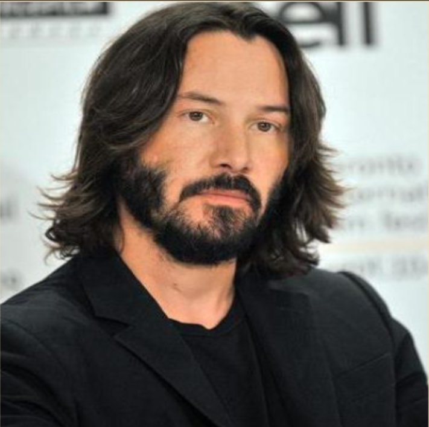
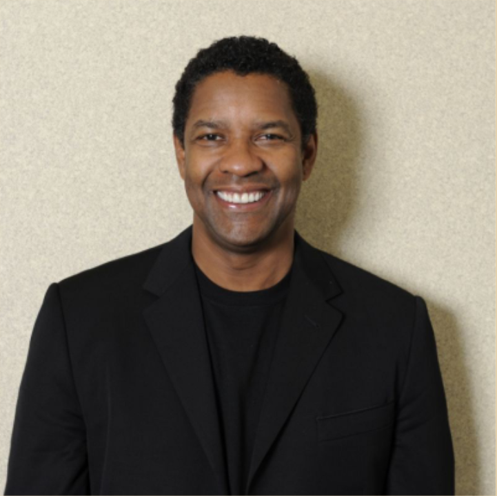
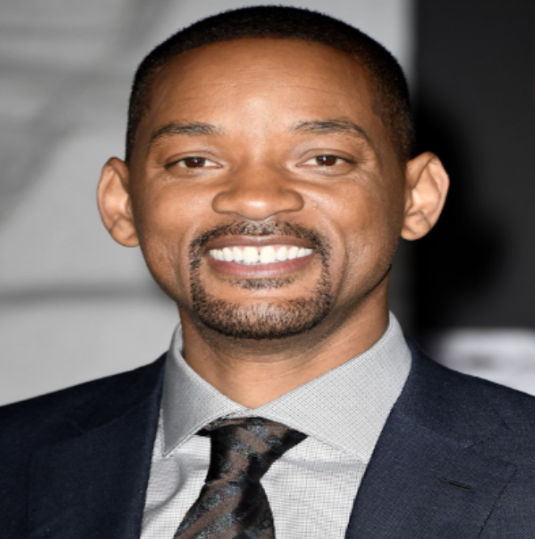
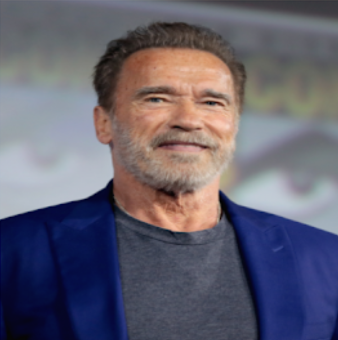

|
Youssef Al-Sharif is Egyptian actor.
His real name Mohammed Ismail Naji , was his
first appearance in the film seven papers
kuchinh in the starring role, and then took
part in the film open your eyes , serial client
1001 , and the series on the backburner, and
thc scries of Cinderella , film Halim in 2006
and he starred in the film The last of the
world in 2006 , until director Youssef Chahine
chose him in 2007 to participate in his last
film before his death, "هي فوضى؟"
|
|
Keanu Charles Reeves is a Canadian actor.
He was Born in Beirut and raised in Toronto,
Reeves began acting in theatre productions
and in television films before making his
feature film debut in Youngblood (1986). He
had his breakthrough role in the science
fiction comedy Bill & Ted's Excellent
Adventure (1989), and he later reprised his
role in its sequels. He gained praise for playing
a hustler in the independent drama My Own
Private Idaho (1991), and established himself
as an action hero with leading roles in Point
Break (1991) and Speed (1994).
|

|
|
Denzel Washington is an American actor.
he is one of the great actors in Hollywood and
he is also one of the actors who are serious in
their accent, yet he has the talent and
harmony in all his roles that are full of drama,
excitement and comedy . Received the Cecil B.
Dumel Lifetime Achievement at the 73rd
Golden Globe Awards . In recognition of a
number of his starring in several distinguished
films, such as "Philadelphian, "Malcolm X", and
"Man on Fire"
|

|
Willard Carroll Smith is an American
actor.
he is a representative of the IJS , and Paper ,
and film producer , and producer of songs
and writer was born on September 25 1968
Enjoy success in TV, movies, and songs. In
2007 , Newsweek magazine described him as
the most influential actor in Hollywood. He
was nominated for four Golden Globes , two
Oscars , and won four Grammy Awards .
|

|
|
Schwarzenegger is an Austrian actor.
he began weight training at the age of fifteen,
and won thc title of master of thc universe
Mr. Universe at thc age of 22 also won the Mr.
Olympia competition . Olympia seven times.
Schwarzenegger has been a prominent figure
in bodybuilding long after his retirement and
has authored several books and articles on the
sport. Schwarzcncggcr has gained worldwide
fame as a Hollywood action movie icon . who
has bccn noted for his lead role in films such
as Conan the Barbarian and The Terminator .
|

|
Cillian Morphy is an Ireland actor.
and He was born born on the 25th of May 1976
and he is the eldest of his three siblings. His
father used to work in thc education sector
and his mother was a teacher of the French
language. Kylian began learning music and
writing songs at the age of ten. He received
his secondary education at a local Catholic
school where his interest in acting began,
after participating in a school play. Killian
described it as an euphoric experience.
Because of his admiration for his good
performance, his teacher, "William Wall", who
was a novelist and poet, advised him to
continue acting.
|
|